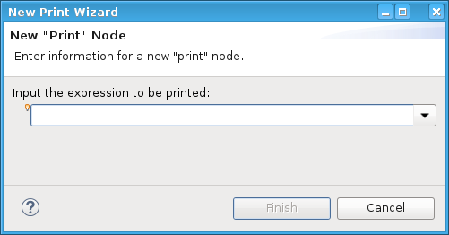
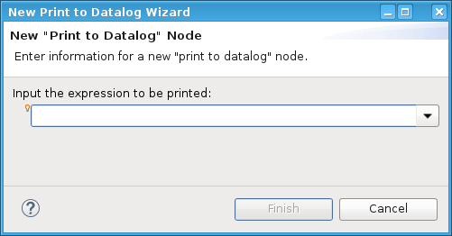

Print nodes
The print node is used to insert comments that show up either in the Report window (Print) or in the Datalog (Print to Datalog).
You can enter any text here. For example, a comment describing the test or its parameters. This is useful for recording details about the test.
The two types of Print nodes are:
Print the variable in the report window or to a printer/report file. |
|
Print To Datalog |
Print the expression or string which you enter in this node. |
When you insert or double-click the node, the dialog window appears where you enter the expression or the string.


Note For both types of print nodes, strings must be given without quotes.
Functional changes
- Introduced before SmarTest 6.3.2
- SmarTest 7.1.0: GDF datalog no longer supported